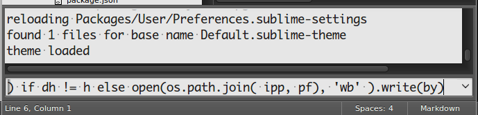
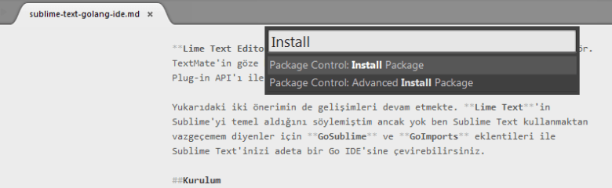
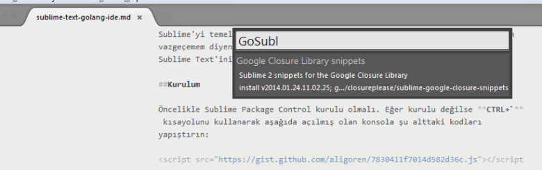
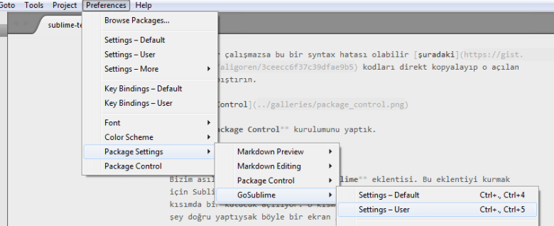

Sublime Text’i Go IDE’sine Çevirin
Go dili programcıları arttıkça kaliteli editör, ide arayışları da aynı orantıda artmakta.
Python, C, C++, Ruby, Java, PHP, Javascript gibi aklınıza gelebilecek diller için IDE bulmak kolay. Bu diller hem kendisini kanıtlamış hem de uzun geçmişe sahip olan diller.
Eğer arkanızda Microsoft gibi dev yoksa o zaman Visual Studio gibi bir IDE bulmanız şans işi. Diğer firmaları da sıralayacak olursak JetBrains, Xamarin gibi firmalar da mevcut. Bu firmaların da kaliteli ürünleri olsa dahi aradığınız dil için özellikle sağladıkları bir destek yok. Yani buradan da arayış yapmanız pek bir kar sağlamıyor.
Gelelim yeni nesil diller konusuna. Bu dillerde aslında yeni nesil olmayanlar var ama popülerliğin son yıllardaki artışına bakarak söylemek gerekiyor. D dili, Haskell, Erlang, CoffeeScript, Dart, Lua, R, Scala ve Go
Bu dillerden en az birisini duymuşsunuzdur. Örneğin CoffeeScript eğer CoffeeScript için WebStorm olmamış olsaydı gerçekten ciddi destek sağlayan bir IDE yok. Fakat WebStorm da ücretli bir IDE olduğu için yine işiniz kullanıcıya kalıyor.
Haskell’a gelelim. Eğer Leksah gibi bir IDE desteği olmamış olsaydı ki bunu kendisi sağlamıyor yine bir kullanıcı ürünü eğer bu destek olmamış olsaydı yine işiniz pek iyi değildi.
Dart ve Scala Eclipse tabanlı ürünler kullanıyorlar. Ancak Eclipse’in sağladığı bug’lar kullanıcıları daha çok JetBrains ürünlerine çekmeye başladı.
Son olarak Go diline gelelim. Başlamadan önce, eğer Sublime Text kullanmak gibi bir niyetiniz yoksa bunun yerine size iki önerim var:
Lite IDE sağlam bir IDE. Gerçekten IDE kavramını hak ediyor. Auto-complete işleminden tutun debug etme, markdown destekleme gibi çoğu aranan ihtiyacı karşılamakta. Ve eklenti desteği de bulunmakta.
Lime Text Editor sublime temelleri üzerine inşaa edilmiş güzel bir editör. TextMate’in göze hoş gelen ColorScheme’i ile uyumlu. Sublime Text’in Python Plug-in API’ı ile uyumlu. Gelişim süreci hala devam etmekte.
Yukarıdaki iki önerimin de gelişimleri devam etmekte. Lime Text’in Sublime’yi temel aldığını söylemiştim ancak yok ben Sublime Text kullanmaktan vazgeçemem diyenler için GoSublime ve GoImports eklentileri ile Sublime Text’inizi adeta bir Go IDE’sine çevirebilirsiniz. Kurulum
Öncelikle Sublime Package Control kurulu olmalı. Eğer kurulu değilse CTRL+` kısayolunu kullanarak aşağıda açılmış olan konsola şu alttaki kodları yapıştırın:
import urllib.request,os,hashlib; h = '7183a2d3e96f11eeadd761d777e62404' + 'e330c659d4bb41d3bdf022e94cab3cd0'; pf = 'Package Control.sublime-package'; ipp = sublime.installed_packages_path(); urllib.request.install_opener( urllib.request.build_opener( urllib.request.ProxyHandler()) ); by = urllib.request.urlopen( 'http://sublime.wbond.net/' + pf.replace(' ', '%20')).read(); dh = hashlib.sha256(by).hexdigest(); print('Error validating download (got %s instead of %s), please try manual install' % (dh, h)) if dh != h else open(os.path.join( ipp, pf), 'wb' ).write(by)
Eğer kodlar çalışmazsa bu bir syntax hatası olabilir şuradaki kodları direkt kopyalayıp o açılan konsola yapıştırın.

Pekala Package Control kurulumunu yaptık.
GoSublime
Bizim asıl ihtiyacımız olansa GoSublime eklentisi. Bu eklentiyi kurmak için Sublime açıkken Ctrl+Shift+P kısayolunu çalıştırıyoruz. Bu sayede üst kısımda bir kutucuk açılıyor. O kısma Install yazmamız yeterli. Eğer her şeyi doğru yaptıysak böyle bir ekran gelmeli.

Bu işlemden sonra 1-2 saniye kadar beklemeniz gerekmekte. Yine aynı pencere açılıyor. Bu sefer kurulum yapılacak eklentinin adını yazmanız gerekiyor. Oraya GoSublime yazmalısınız. Aşağıdaki gibi yazsanız da göreceksiniz. Bende kurulu olduğu için listede görünmüyor. Sizde kurulu olmadığı için o listede görünecek.

Bu işlemden sonra son olarak yine aynı yöntemle GoImports eklentisini kuralım. Bu eklenti otomatik import işlemini yapıyor. Bazı Ayarlamalar
Eklentilerin kurulumları tamamlanmış durumda olsa dahi bazı ayarlamalar yapılmadığı için eklenti tam anlamıyla çalışmayacaktır. Bunun için indirilen eklentinin User Settings dosyasına bazı eklemeler yapmalıyız. Bu ayar dosyasının yolu şöyle
Preferences->Package Settings->GoSublime->Settings-User

Buraya tıklayınca karşımıza bir pencere açılacak. Bu pencere büyük ihtimalle boş. Boş kısma şu kodları yapıştırıp kaydedin.
{ "fmt_cmd": ["goimports"], //C:\Go\ for windows "env": {"GOPATH": "$HOME/go"} }
Burada bulunan GOPATH değerinin karşısındaki kısım Go dizini oluyor. Eğer mevcut hali ile Windows üzerinde çalışmazsa Go nereye kurulu ise oranın linkini verin. Windows işletim sistemlerinde Go varsayılan olarak C: dizinine kurulmakta. O yüzden yukarıdaki windows kısmını öyle belirttim.
Hızlı kodlama yapmak isteyenler olabilir. Otomatik build işlemi, Test ve diğer işlemler. Bunun için yine yukarıda belirttiğim ayar dosyasını açıp şu kodları goimports ayarının hemen altına yapıştırın:
"on_save": [{ "cmd": "gs9o_open", "args": { "run": ["sh", "go build . errors && go test -i && go test && go vet && golint ."], "focus_view": false }}], "autocomplete_closures": true, "complete_builtins": true,
Evet kurulum ve ayarlamalar bitti. İyi kodlamalar.
Comments
Comments powered by Disqus